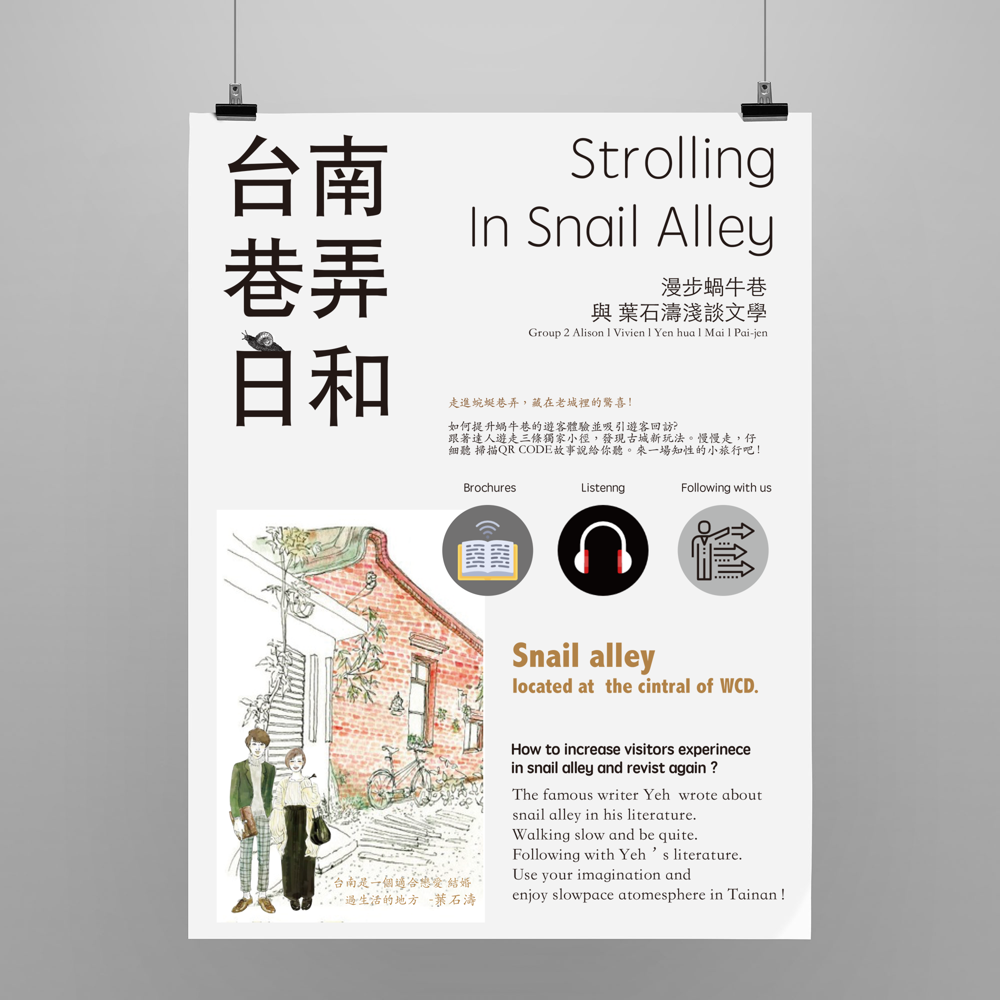
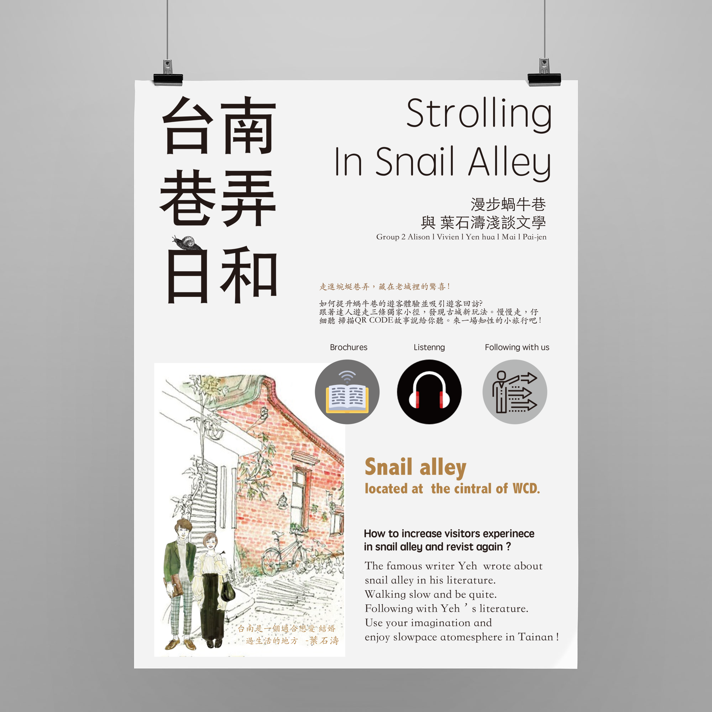

Design process: observe > discover > solve
Define
Persona
在人物誌的部分，可以分為目前吸引的主要遊客，與未來期望吸引的遊客。
POV

Visitors who want to discover Snail Alley need to know the story and background rather than only taking photos because this influence their willingness to come back.
//
Solution
Proposal 1 (Eliminated)
在缺乏故事與資訊的問題上，由於土地為私人擁有，無法任意設立實體的說明牌等，我們想透過AR的方式建立像Pokemon Go的APP，稱為Snail Go. 這麼一來，遊客可以在APP中玩尋找蝸牛等遊戲，也可以透過APP認識關於蝸牛巷的歷史與葉石濤文學。為了驗證想法，我們回到場域，用口述的方式敘述發想詢問遊客與店家的意見。
然而回饋大多指出過度使用科技與原本蝸牛巷慢活台南的宗旨不相符，同時我們的提案沒有涵蓋其他發現的問題與因地制宜。因此重新整理關鍵字，再次做了腦力激盪。
Proposal 2
在此提案中，分為三大部分：
1. 聽見蝸牛巷
在思索如何讓遊客回到過去並身歷其境的感覺，我們認為用聲音去傳達故事是一個有趣的體驗。藉由在現有的藝術裝置上設置互動式的撥放器，讓遊客可以聽故事或沉浸在氛圍之中。再者，由於遊客必許停下來聆聽，他們也自然而然的能放下腳步。
2. 漫步手冊
將會放在入口與各大景點處，提供遊客取用。每期的手冊會有不同的主題設計，讓手冊不僅僅只是訊息的傳播，更是值得收藏的作品。
3. 尋訪路線
由於蝸牛巷為遊客們景點與景點間的中繼站，我們將蝸牛巷規劃成三條路線，以銜接周圍景點的方式，讓從不同入口進入蝸牛巷的遊客踏訪各自的特色路線。路線分別為經過許多古色古香老店的「老職人路線」、銜接業石濤文學館的「葉石濤文青路線」與日治廟宇的「古蹟與文化路線」。
//
 
